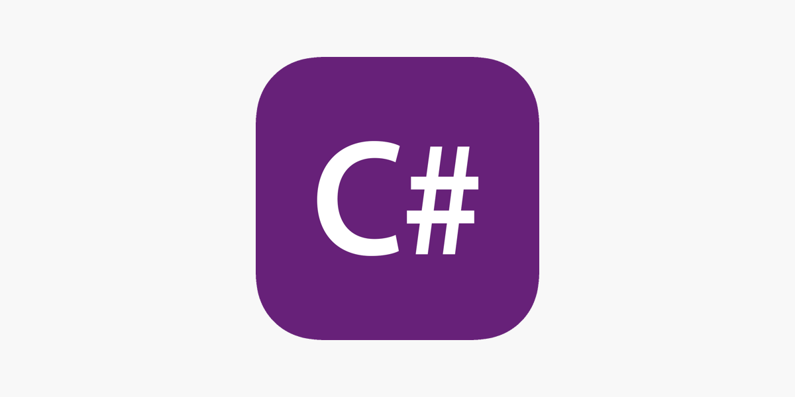

-

Python
Python é uma linguagem de programação moderna e popular, que oferece um conjunto de ferramentas abrangentes para o desenvolvimento de aplicativos e soluções. É ideal para diversos usos, desde o desenvolvimento de aplicações Web até o processamento de grandes dados. É especialmente conhecida por sua simplicidade, clareza e facilidade de aprendizado, permitindo que desenvolvedores iniciantes possam criar projetos rapidamente e mais facilmente.
-

Java
Java é uma linguagem de programação popular e amplamente utilizada para desenvolver aplicativos Android e para construir soluções de software de grande escala. Desenvolvida pela Sun Microsystems, atualmente a Oracle, a linguagem Java é orientada a objetos, possui grande ênfase na segurança e oferece uma plataforma completa para desenvolvedores implementarem seus projetos.
-

C#
C# é outra linguagem de programação orientada a objetos muito popular e usada principalmente no ambiente Windows. Desenvolvida pela Microsoft, a linguagem C# é fortemente tipada, o que significa que todos os tipos de dados devem ser declarados antes do uso. As aplicações desenvolvidas em C# têm grande desempenho e segurança, e podem ser usadas para criar aplicações desktop, aplicativos móveis e web.
-

R
R é uma linguagem de programação especializada em estatísticas e computação numérica, frequentemente usada por cientistas de dados e pesquisadores acadêmicos. Com a R, é possível manipular, analisar e visualizar grandes conjuntos de dados, além de permitir que o usuário crie gráficos estatísticos complexos e analise resultados de forma dinâmica. A linguagem R é open-source e oferece uma ampla gama de pacotes estatísticos e recursos úteis para pesquisadores em diversas áreas de atuação.